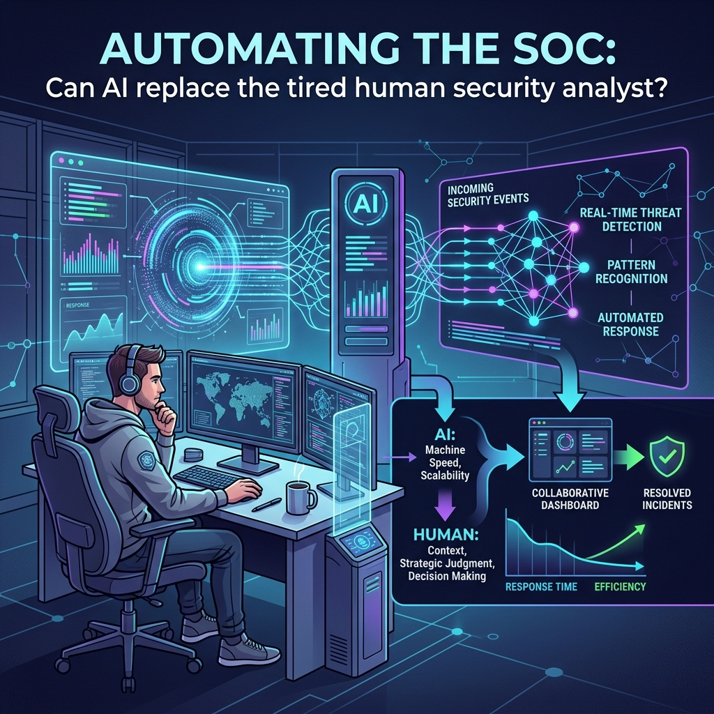

Automating the SOC: Can AI replace the tired human security analyst?
How artificial intelligence is reshaping cyber defense and turning data overload into actionable insight.

The synergy between machine speed and human insight creates a layered defense far more resilient than either could achieve alone.
🚀 Imagine a security team that can cut the time spent on routine alerts from half an hour to just a few seconds. The future of cyber defense is already here, thanks to artificial intelligence that is reshaping security operations centers (SOCs) and turning data overload into actionable insight.
Productivity Boosts and the End of Chores
AI can automate between sixty and seventy percent of the repetitive tasks that once clogged analyst desks. This includes triaging alerts, parsing logs, and correlating data across multiple sources. A recent analysis shows that human analysts who once spent thirty to forty minutes on these chores now need less than two minutes when AI takes the lead. The result is a dramatic boost in productivity and a sharper focus on the high‑value work that only people can do. 📊
The Human Element Remains Irreplaceable
Despite these gains, AI is not a replacement for human judgment. Complex threat detection, strategic decision making, and nuanced context interpretation still rely on seasoned analysts. The synergy between machine speed and human insight creates a layered defense that is far more resilient than either could achieve alone. 🤖🛡️
Looking Ahead: Proactive Defense
Looking ahead, the integration of AI into SOC workflows will deepen. Predictive analytics will anticipate attacks before they hit, while adaptive learning models will evolve in real time to counter new tactics. As organizations adopt these tools, the role of analysts will shift from reactive firefighting to proactive threat hunting and security strategy. This evolution promises not only faster response times but also a smarter, more adaptive security posture that can keep pace with the rapidly changing threat landscape.